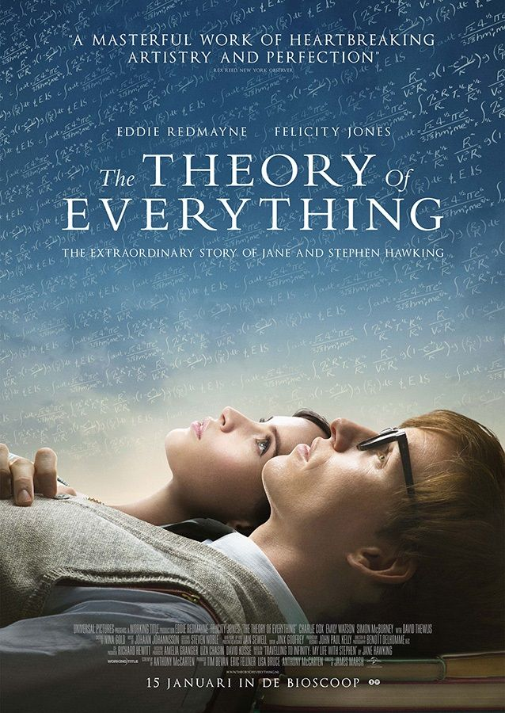
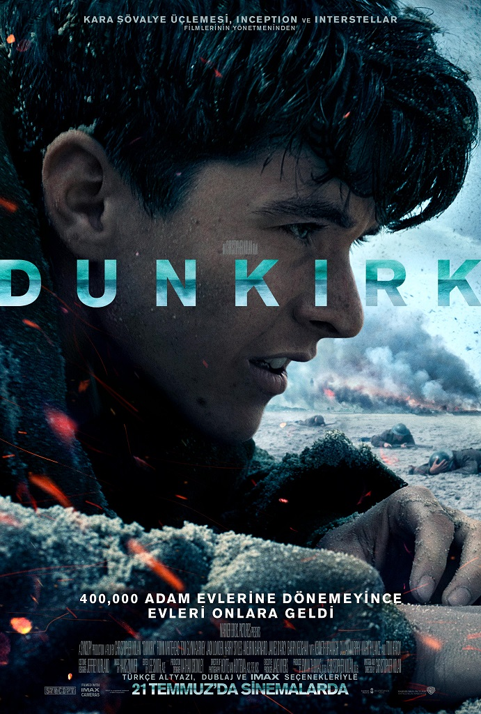
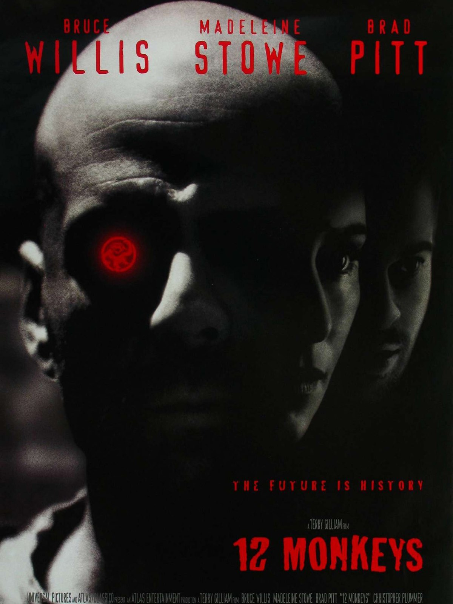
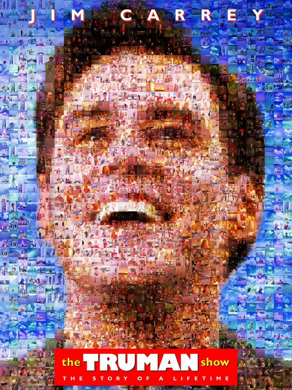
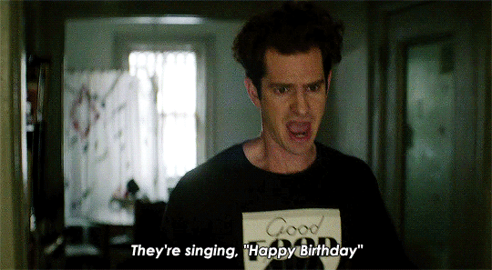

|  |
Film, modern bilim ve teknoloji tarihini değiştiren İngiliz fizikçi ve teorisyen Stephen Hawking'in hayatını ve karısı Jane Hawking ile olan ilişkisini, üniversite döneminden itibaren ele alıyor. Stephen Hawking Cambridge Üniversitesi'nin dehasıyla dikkat çeken bir öğrencisiyken Jane Wilde ile tanışır. İkisinin mutlu birlikteliği, Hawking'e henüz 21 yaşındayken teşhisi konulan hastalıkla başka bir boyut kazanır. Film tüm olasılıklara meydan okuyan çiftin hikayesini konu alır. Yıllar Hawking'in hastalığını daha da şiddetlendirir ve sonunda ilişkilerinin sınırlarını zorlayan bir noktaya sürükler. Filmin yönetmen koltuğunda Oscar ödüllü James Marsh bulunurken başrolleri Eddie Redmayne, Felicity Jones ve Emily Watson paylaşıyor. Eddie Redmayne'in dikkat çeken oyunculuğu 2015 yılı en iyi erkek oyuncu oscarıyla da taçlandırıldı. |
|  |
Dunkirk, Christopher Nolan'ın yazdığı ve yönettiği 2017 çıkışlı savaş filmi. Dünya Savaşı sırasında İngiliz ordusunun Fransa'nın Dunkerque kıyılarında 400 bin askerle sıkışması ve bu ordunun, deniz desteğiyle Dunkerque'ten tahliye edilmesini konu almaktadır. Savaşı hava,kara ve denizden takip ettiğimiz yapım eleştirmenlerden de tam not aldı. Nolan'ın en beğenilen yapımlarından olan filmin başrolünü Mark Rylance üstleniyor. Oyuncu kadrosunda ise Mark Rylance, Harry Styles, Tom Hardy, Barry Keoghan ve Kenneth Branagh bulunuyor. |
|  |
1995 yılı bir Terry Gillian filmi. Dünyayı yok eden ölümcül bir virüsün çıkış noktasını bulmak ve yok etmek için zamanda yolculuk yapan James Cole'un hikaysini izliyoruz. Zaman yolculuğu esnasında akıl hastanesine kapatılan James hikayesine insanları inandırmaya çalışıp geleceği kurtarmaya çalışır. Başrollerini Bruce Willis, Brad Pitt ve Madeleine Stowe'nin paylaştığı yapıt 2015 yılında da dizi olarak tekrar ekranlara gelmiştir. |
|  |
Eşi, en yakın arkadaşı, annesiyle sıradan ve tek düze bir hayat yaşayan Truman bir gün vefat ettiğini düşündüğü babasını sokakta görür. Bu andan sonra hayatını sorgulamaya başlayan Truman haytaında normal olmayan şeyler olduğunu fark eder. Başrolünde Jim Carrey olan yapım, çıktığı günden bugüne kadar popülerliğini ve yenilikçi bakış açısını korumayı başarmıştır. 1998 yılında çıkmıç olan Peter Weir filmi güzel bir komedi örneğidir. |
 |
 |
SPIDERMAN: NO WAY HOMESpiderman'in kendini bulma macerasında bu film ile Home serisini kapatıyoruz. Serinin en beklenmedik filmi sizi bekliyor. |
TICK TICK BOOM!Film Jonathan Larson'ın otobiyografik oyunundan beyaz perdeye uyarlanmıştır. 90'larda New York'ta müzikal besteler yapan Jon'un hikayesini konu alır. 30 yaşına yaklaşırken kariyer seçimini sorgulamaya başlar. Bir yandan da kız arkadaşının baskısını hisseder. |